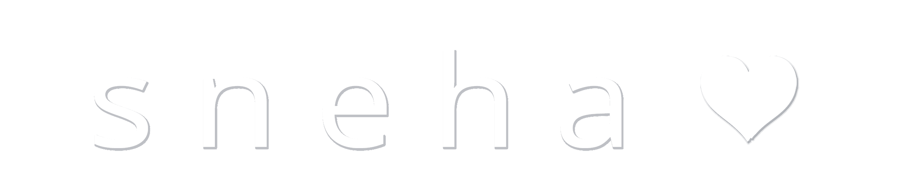
Background
Mirror is a clothing store that carries clothing for all age groups. It has
clothes similar to Old Navy and H and M, and has been selling clothes for a
while without an online store. Now, it is going online, and requires a
modern new web design for its website.
Competitor Analysis shows strengths and weaknesses of Mirror's competitors, and starts building user personas.
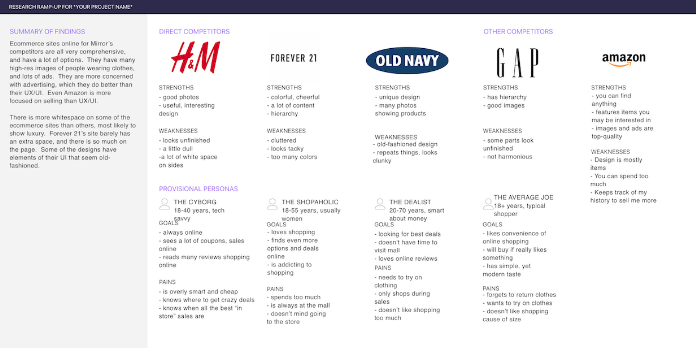To gain insight about user’s online shopping experience, I have interviewed participants that are all female and one is male. All participants are (25-35), (35-55), and are working professionals or students. The interviews explore online shopping to see what users find positive and negative about these experiences, to gain a better understanding of what is important to users.
Build a website that has solid copy on the landing page, and item descriptions that attract users searching for clothes online. The site shows ads, photos of a variety of clothes that are stylish, and of good quality. Website should take inspiration from JCPenney, HM, and Amazon, stores which the users all like. Also, the website will have some sales and coupons that are not applicable in store. The UI is clean and efficiently moves the user through to the the shopping section where they can browse many clothes, and filter these based on size, and other option filters. There will be a section explaining the clothing stores system of measurements so that the user can check what size he or she is. The user can return clothes easily, like Amazon. Overall the site design is good, and saves the user time, gives them many clothing options, and makes them feel smart about their money.
These are exercises that work on building the persona and product requirements, based on my research.
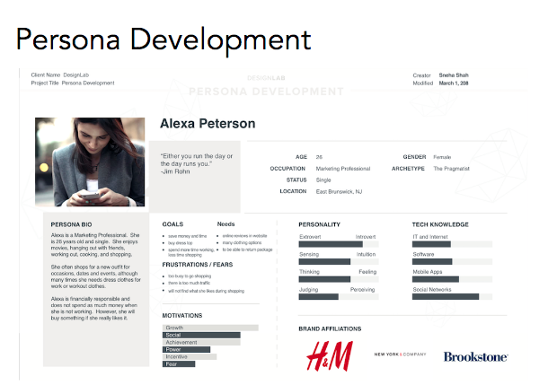 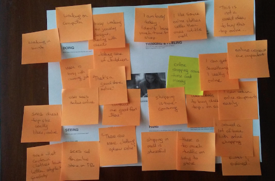 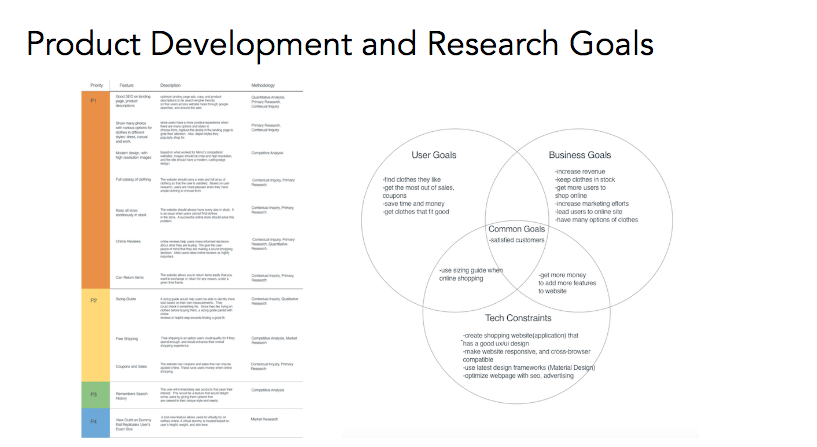The Card Sorting exercise gives users a test to see how they would sort the categories, and sections of my site.
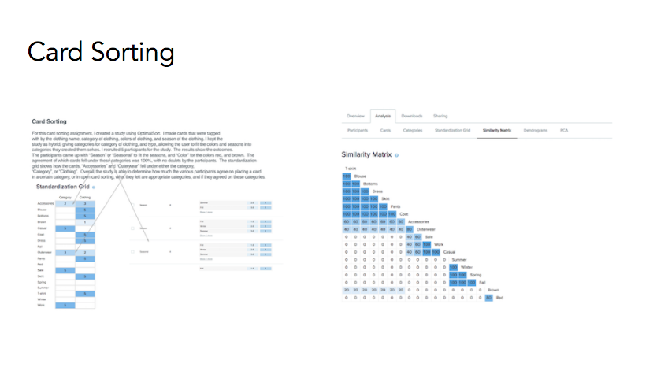Below are the my wireframes and initial responsive prototypes. These both helped me lay the foundation for the eventual outcome. Certain sections were based on my research, persona development, and understanding of the site flow.
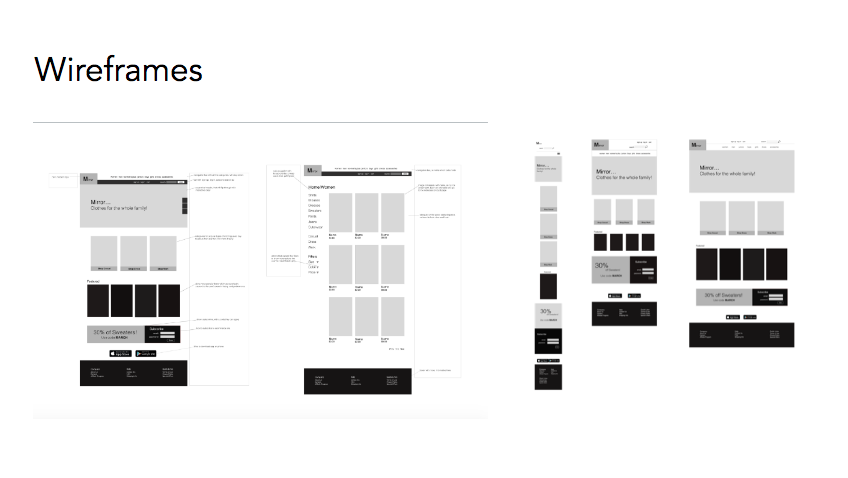 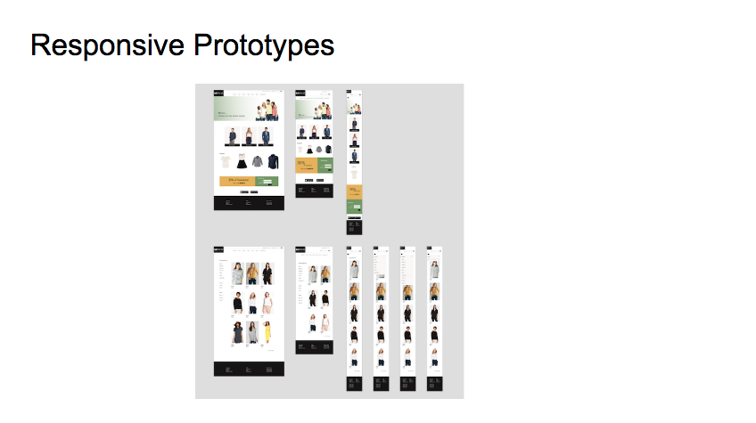These are elements of the user interface design. The design choices for these elements are based on trying best to encapsulate the Mirror brand, from what was learned in the intial project brief and research.
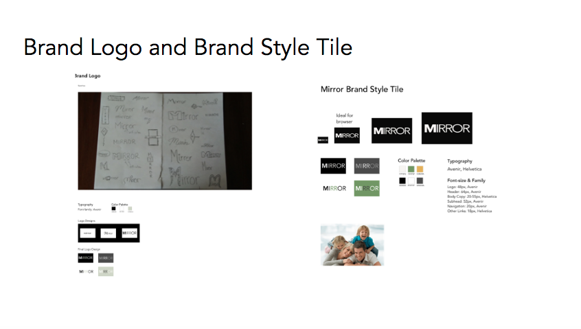 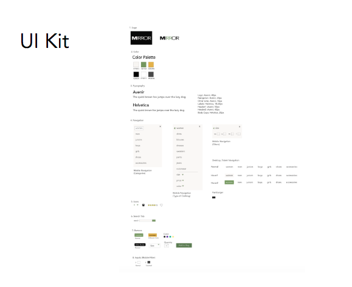Once I had completed a prototype in Invision, I had to test it on users to check how effective, and usable it was.
The affinity map takes the research from my usability testing and organizes it, so I know how to improve my prototype.
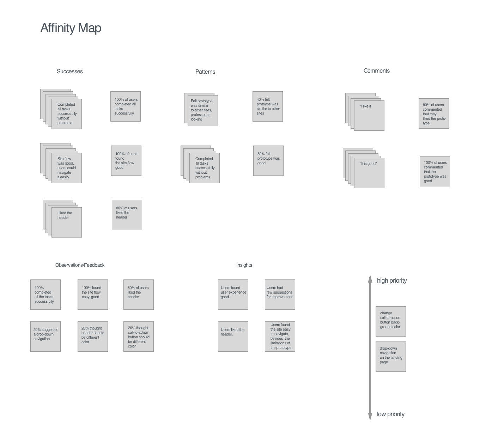The conclusions from my usability testing and affinity map provide me with a good idea of how to continue improving my prototype. At this point, my next steps are to "Make changes to prototype from research feedback. Add a drop-down navigation to the landing page, and change the call-to-action button to the accent color, green."